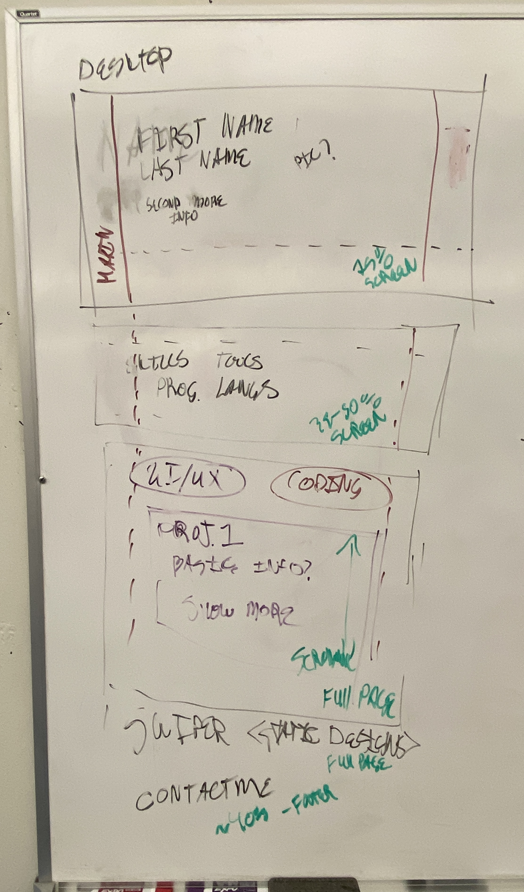

<div class="mt-3 text-sm leading-6 text-gray-600">
        <div class="flex flex-col ">

                            <h3 style="padding-left: 5%; padding-top: 3%; padding-bottom: 3%;" class="text-xl text-black"> 
                                Phase 0: Talking to a Design Professor </h3>
                                <a style="padding-left: 5%; padding-bottom: 1%;" class="text-gray-500 text-xl hover:underline" href="old_design.html">Old Design </a>
                            <p style="padding-left: 5%; padding-right: 10%; padding-bottom: 5%;"class=" text-gray-600"> 
                                Upon creating my first iteration of this portfolio and proudly showing it off to my friends 
                                and a few professors, I showed it to my design professor and she gave me some hard advice 
                                that I needed to hear. She was impressed that I had coded it myself but she said that it 
                                was average and ok for a student. This did not feel nice in the moment but I did need to 
                                hear that. I got some recommendations and she talked me through what would make a better UI/UX portfolio. 

                            </p>
                            <div class="flex flex-row " style="padding-right: 3%;">
                                
                                

                                <div class="flex flex-col pl-[3%]">
                                <h3 class="text-xl text-black"> Phase 1 : Research</h3>
                                <p  class=" text-gray-600  ">
                                    Taking the advice and examples I was given as well as finding more examples online,
                                    I sat down and noted what I liked and the aesthetics of the portfolios I looked at.
                                    From there I created a mind map of what I wanted to include in my portfolio. 
                                </p>
                                </div>
                            </div>

                            <div class="flex flex-row">
                            <div class="flex flex-col pl-[3%] pr-[3%] ">
                                <h3 class="text-xl text-black"> Phase 2 : White Board drawing </h3>
                                <p class=" text-gray-600">
                                    After I had an idea of the sections I wanted to add into my portfolio,
                                    I drew out a sketch on a whiteboard to better visualize the flow. 
                                </p>
                                <h2 class="text-xl text-black pt-[5%] pr-[3%]"> Phase 2.5: Revise </h2>
                                <p class=" text-gray-600"> Having a whiteboard sketch, I was able to talk to my peers and walk 
                                    through what I was imagining. Their input helped me revise until I felt happy with my idea.
                                </p>
                            </div>
                            
                            </div>

                            <div style="padding-left: 5%; padding-bottom: 5%; padding-right: 10%;">
                                
                            
                                <h2 class="text-xl text-black"> Phase 3: Coding the First Draft</h2>
                                <p class=" text-gray-600">
                                After I had a solid plan of what I was gonna make, all that was left was to code it. 
                                I opened a new file and started to code. Starting out with a basic framework and from
                                there filing in sections and styling as needed. 
                                </p>
                            </div>
                            <div style="padding-left: 5%; padding-bottom: 5%; padding-right: 10%;">
                                
                            
                                <h2 class="text-xl text-black"> Next Steps </h2>
                                <p class=" text-gray-600">
                            Now that I have completed a first working iteration of my portfolio, I will be circling back to 
                            talk to my professor again. I know this isn't the end and I will need to make changes. 
                            My plan moving forward is to gather feedback from several of my professors in different departments as
                            well as some of my peers to see how I can improve both the design, usability, and user experience of my portfolio. 
                            <br>
                            <br>
                            <span class="text-sm text-gray-500"> If you are reading this and have any recommendations or changes you think would be beneficial, reach out and let me know, my email is in the footer.  
                            </span>
                            </p>
                            </div>

                        </div>

        </div>